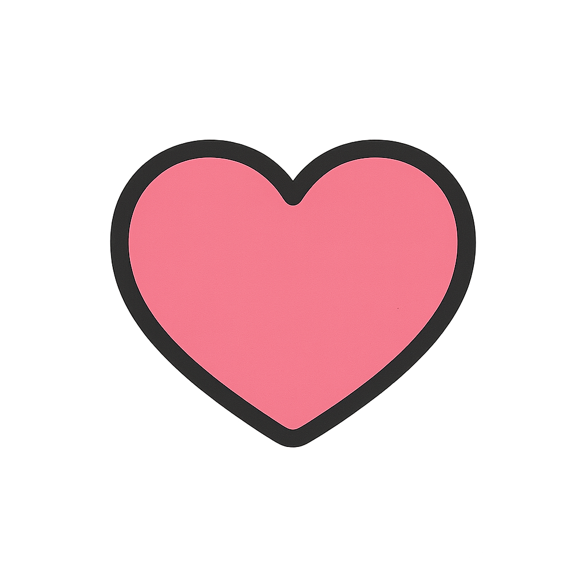
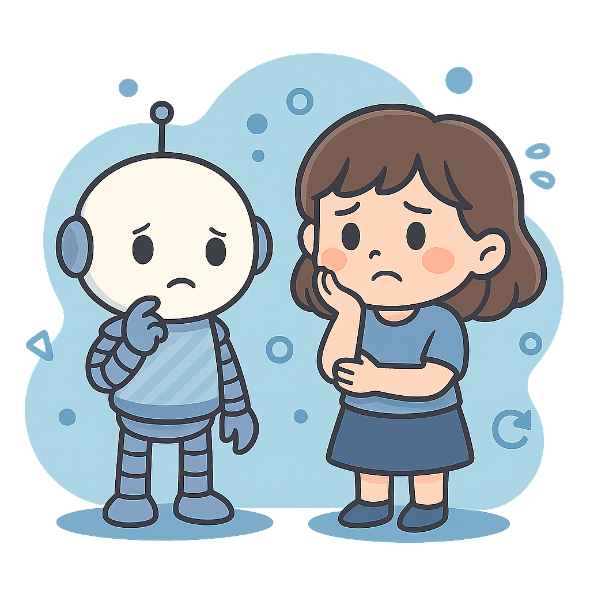

한 걸음씩 적응하면 충분해요!
변화를 두려워하지만 관심은 높은 당신은
불안형

강점: 높은 감수성, 리스크 경계 능력
발전 방향: 초급 AI 실습부터 작은 성공 경험 만들기
🌱 ① 부담 없는 초보 친화 학습
· 입문 강의 → 가벼운 실습 → 쉬운 성공 경험 단계별 방식
· 첫 실습은 실패해도 되는 쉬운 과제 (예: 텍스트 요약, 간단한 캐릭터 생성)
🧩 ② AI와 함께 멘탈 관리
· AI에게 일정 고민이나 학습 계획 맡기기
· 두려움 해소용 Question-to-Answer 프롬프트 (걱정 → 답변 자동 생성)
🤝 ③ 외부 지원 & 협업
· 친구와 2인 스터디 형태 권장 (안정감 ↑)
· “나만 뒤처지는 것 같음”을 줄이기 위해티끌 수준의 성장 기록을 눈에 보이게 만들기 (예: 오늘 프롬프트 1개 개선)